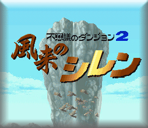

～ 传说の道具一览 ～
����说起SFC版的风来西林，那可真是经典中的经典！如果你大言不惭地说你是风来人，但连SFC版也没碰过的话，偶劝你还是趁早找团棉花撞死算了，免得丢人！SFC版隐藏了诸多鲜为人知的秘密，这里就记录了所有隐藏道具的秘密，这些道具在正常游戏中是不会出现的，据说是游戏开发阶段的产物，后来在游戏开发完成时因某种原因而删除了，但在游戏中却还残留着这些道具的尸骸，在某种特定场合下就会复活。
传说の道具
特殊效果
补充说明
�oどくの盾
反弹敌人的毒攻击
�iけずの��
一旦使用则一定回合内无法使用道具
不能使用道具会很惨的！
消え去り草
一定回合内变成透明状态
物忘れの草
全部道具变为未识别状态
��の�N
可与宠物コッパ及NPC对话，获取有用的消息
くさい草
放置地上时怪物会集结到该处
�rの砂の��物
时间倒逆，返回刚进入该层迷宫时的状态
「后悔药」啊，王牌道具！
全�绀���物
房间内所有怪物全灭且能获得其经验值
利用白纸卷物可发挥该卷物的效果
�}域の��物
放置地上站到卷物上不会受到怪物的直接攻击
利用白纸卷物可发挥该卷物的效果
�r限爆��の��物
放置地上一定回合后自动爆发
パルプンテの��物
随机发生以下一种效果：
①异常状态全回复；
②LV提升3；
③剑、盾强度加3；
④道具的使用效果变为原来的3倍；
⑤该层敌人全部死亡且能获得其经验值；
⑥该层敌人全部变成道具；
⑦该层敌人全部变成はぐれメタル（实际上变成マムル）；
⑧死机？！
形态是透明的，要使用目药草才能看到
黄金の羽根
身上持有时，可看到ンドゥバ系怪物的真实形态
黄金神鸟留下的羽根，非常罕贵
奇妙な箱
继承特鲁内克系列的道具之一
しあわせの箱
继承特鲁内克系列的道具之一